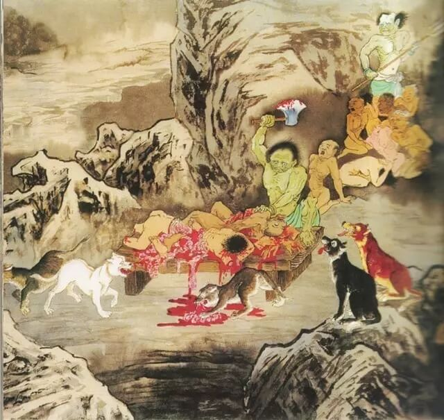
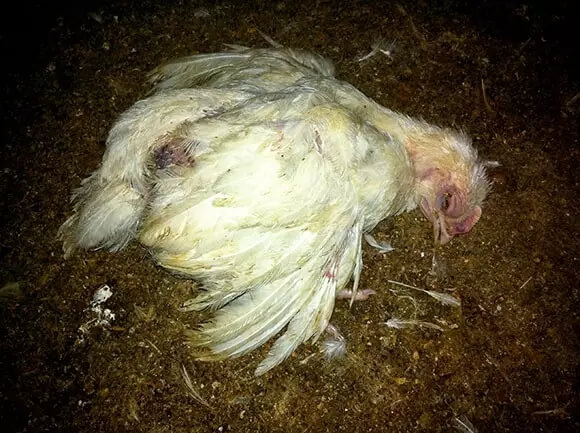
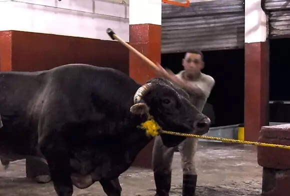
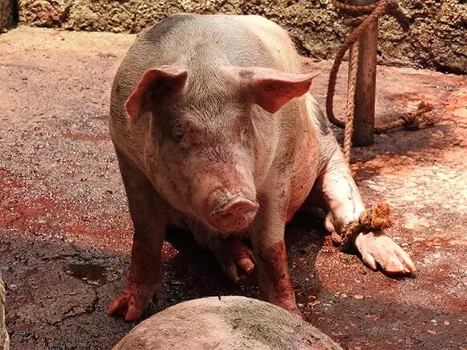
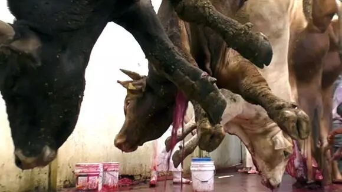

温馨提示：佛学入门系列课程由佛法人生弘法平台（www.xuefo.vip）根据历代祖师大德、当代法师的开示整理而成，为了避免在阅读时产生一些困惑、误解甚至怀疑和诽谤，强烈建议您从第一课开始按顺序学习。最后，愿大家都能成为一个正见的佛教徒，早证菩提。
一、肉食文化
在当今世界肉食文化还占有绝对的统治地位。长期以来，人们对发生在这个星球上的大规模屠杀和虐待动物的现象熟视无睹。由于人们对动物的权力和福祉普遍持以漠不关心的态度，致使屠杀和虐待动物的行为渗透于社会生活的各个领域。在屠宰场，在厨房里，在餐桌上，在豪华的饭店里，在现代化的试验室里，到处都充满着血腥的气息和动物的呻吟。
我们的饮食文化基本上是肉食的，大多数医学工作者还认为肉食是人体所必须的，社会上的领袖人物和明星们大多都是肉食的，我们的电影、戏剧和小说中所描述的饮食也都是肉食的，亲戚朋友们也都是肉食者，街上素食餐馆寥寥无几，商店和超市里摆着各种肉食。总之，在这种文化氛围里，肉食已经深深地固化在我们的思想意识里了。

二、吃肉=吃人
“肉字里边两个人，里边罩着外边人。众生还吃众生肉，仔细思量人吃人”。
中国这个“肉”字，是个口字张开，里边有一个人，外边又有一个人等着。外边的人想进去，但还没进去；里边的人想出来，但出不来，因为与上边这个人黏住了，所以不能跑出这个死框。这个“肉”字，就是一个被吃的人和一个吃肉的人。吃肉的人在外边，还是个人；被吃的人已经变成畜生了，而且又被卡住，不上不下，好像被困住了，虽然口是开着的，但有个人在外边堵住，所以出不去这个框框。这个框框或者是个羊圈，或者猪圈，或者牛圈。被吃的人就住在里头，外边有个人管着不准他出来。为什么不准他出来？就因为要吃他的肉。
所以这吃肉的人与被吃的人就有一种关系，互相罩着，解不开冤结了。我们人是众生，所吃的肉也是众生，无论什么动物，牛、羊、马、鸡、犬、猪等，都是众生之一。有人就说：“这些众生是天生来给人吃的”。如果说动物是预备给人吃的，那人又是预备给谁吃的呢？由此可见动物不一定天生就是给人吃的，只是人弱肉强食，比其它动物高明，就想吃其它动物的肉。
这种吃肉的关系，这是人吃人！既然是人吃人，就应该想想这个被吃的人（已经变成牛、羊、马、猪身）和我有没有关系？
《楞严经》：以人食羊，羊死为人，人死为羊，如是乃至十生之类，死死生生，互来相啖，恶业俱生，穷未来际汝负我命，我还汝债，以是因缘，经百千劫，常在生死。
因为人吃羊肉，羊死之后转生为人，人死之后转生为羊，死死生生互相吞食，恶业伴随而生，冤冤相对，尽未来际你欠我命，我还你债，以此因缘，虽然经过百千劫数，仍常处在生死苦海之中。
既然羊可以变还为人，其它的动物也可以复还为人，只是它们换换衣服，改头换面，我们人就不认识它们了。其实，这些猪牛羊就是我们过去生的朋友、亲戚、六亲眷属，这是往远的来说。若再往更近的说，说不定它们就是自己前生的父母，或者今生的父母，或者是无始劫至今的父母。若能这样一想，吃自己父母亲的肉，这多不孝啊！所以仔细思量是人吃人，人吃猪，猪变人；由猪变的人，复还吃由人变成的猪。就这样辗转互相还报食啖，所以仇恨越来越深。仇恨越深，就越要吃。这里头都有一股冤业牵着，令你欢喜牺牲其它生命，来滋补自己的生命。
三、吃肉=吃毒
现在很多动物从出生、长大、到被屠杀至死的短暂一生，完全在推挤、压迫、关闭、捆绑、悬吊、黑暗、强光、污臭的环境中度过，躯体饱受种种凌虐的伤痛，心理上必然充满着种种恶劣的情绪，因而刺激细胞的病变，分泌毒质，发生潜在的疾病。吃了病肉、毒肉，而人能不生病、不中毒，才是怪事。
动物被杀之前的极度恐惧和巨大痛苦，使其体内生化作用发生极大变异，从而产生强烈的毒素！其血液中的荷尔蒙，尤其是肾上腺素的分泌会极度亢进，同时血液循环紧急加速，大量的荷尔蒙及毒质随之流向全身，其身体瞬间布满毒素，尸体完全被毒化！
实验证明：二公斤炸牛排所含的致癌物质苯基嘌呤，和六百支香烟所含的一样多！老鼠若喂以苯基嘌呤，就会得胃癌及白血病（亦称血癌或骨癌）！
最近，一份以五万名素食者为研究对象的研究报告，在癌症研究领域引起巨大震撼！这份报告指出：这群素食者罹患癌症的比例之低，令人相当惊讶！与同年龄同性别的人比较，各类癌症在这群人身上发生的比例明显地减少！报告最后说：他们显然可以活得更长。
四、肉食=毒质
佛教有正法、像法、末法，这都是众生的业报所感而现的。正法时代，古人的福报广大、深厚，智慧也高，地里的水好像牛奶那么有营养，每一处的水都是如此。等到像法时代，所喝的水就没有那么营养美味了。现在是末法时代，所喝的水，不单没有营养，还含藏着很多种的毒质。你说：“我们把水消毒过了”。虽然如此，但毒质还是存在，无法消去。在这个世界上，毒是一天比一天多，把空气也染污了，所以在空气中也弥漫着毒质。因为世间人用毒用得太多，把毒素吸进身体里边，经过一番化学作用，然后再反射出来，所以毒质就布满空气中。

若想这世界真正消毒，就要大家吃素不吃肉，因为众生肉都有毒，这种毒质是很微细微细的，当你吃的时候不会觉察，但慢慢地就中了这种毒质。而且这种毒质特别厉害，没有什么药品可以解，因为其中的冤业太深。所以古人说：千百年来碗里羹，冤深似海恨难平，欲知世上刀兵劫，试听屠门夜半声。
五、肉食=尸体
语言和文字，真是奇妙的东西。换一种表达方法、换个说法，就会对人的心理产生不同的暗示。比如，上菜市场买猪肉，你肯定不会问商贩这猪的“尸体”多少钱一斤，商贩也肯定不会说这猪的“尸体”多新鲜、多好，而是说“猪肉”多新鲜、多好。实际上，猪肉=猪尸体。吃“猪肉”，也就是吃“猪尸体”。表达方法不同，感觉是不是就截然不同了呢。
人有时很奇怪，假如知道某人有病，即使是亲人，也不敢用他用过的碗筷，甚至怕吃到他的剩菜，怕吃到他的一滴唾液。而且和‘人类’共餐，常强调‘公筷母匙’，大家都认为这叫‘讲究卫生’。假如亲人肉上长脓包，大多数人也绝不敢去吸他的肉和脓。但是，人们却常把很多不知有没有生病的动物，大块大块的尸体（当然含唾液、体液）放入口中亲吻又嚼食，也把其肉汁、血液（比唾液严重多多）放入口中吸，还说‘好吃’，完全都没考虑：这是否符合自己对‘人’时所讲究的‘卫生观念’？可能是动物比人更干净健康吧！
很多人晚上不敢自己一人到‘人体解剖室’，也不敢自己一人到殡仪馆冷冻库，说是怕死尸，不知道自己家中的冰箱内，死尸更多，而且有的断头，有的断脚。也有很多人不敢晚上自己去坟墓，说是怕闹鬼，不知道自己的肚子也经常作动物的坟墓、鬼屋，而且随便‘下葬’，都没看‘好风水’。

六、吃肉=杀生
有些人可能想：我不是杀生，只是买肉，这会不会有过失呢？也是有的。佛陀在《楞伽经》中说：“为利杀众生，以财网诸肉，二俱是恶业，死堕号叫狱”。有些人为了肉而杀生，有些人为了肉而付钱，这两者其实有同等罪业，都会堕入号叫地狱。
为什么地狱众生的数量远远超过人类？就是因为大多数人根本就不相信地狱存在，从而肆无忌惮的造作各种恶业，但是等到真正堕入地狱里的时候，后悔也已经晚了。
如果让你选择，你是愿意拥有全世界所有的财富，还是拥有你的生命？你一定会选择保住你的生命，因为没有生命就没有了一切，所有的动物也会做出同样的选择。它们和我们一模一样，特别珍爱自己的身体，特别珍惜自己的生命，特别不想死。
七、三净肉
按照小乘的观点，三清净肉是可以食用的，《毗奈耶经》等经论中说：比丘、沙弥、优婆塞、优婆夷可以享用三清净肉。那什么是三清净肉呢？一是没有见到为自己而杀的肉；二是没有从可信赖的人处听到为自己而杀的肉；三是没有怀疑为自己而杀的肉。此外，自然死亡的动物肉以及经过三个市场的肉（有些动物被宰杀后，在第一个市场没有卖出去，换到另一个市场卖，还是没有卖出去，最后到第三个市场被卖掉。按照小乘的观点，在第三个市场买来的肉可以食用，因为这肯定不是为自己享用而杀的）也可以享用。除了这些以外的肉绝对不能享用，如果明知是不清净的肉却享用，会有严重的过失。
佛教徒可以享用三清净肉，这只是小乘经论的观点，按照大乘的观点，任何肉食都不能食用，也就是说，对于大乘佛教徒来讲，连三清净肉也不开许食用，我们来看看佛陀在大乘经典中如何开示的。
《楞严经》：汝等当知，是食肉人，纵得心开似三摩地，皆大罗刹，报终必沉生死苦海，非佛弟子。如是之人，相杀相吞，相食未已，云何是人得出三界？
《楞伽经》：大慧，我未开许任何人食众生肉，过去如是，现在如是，将来亦如是。
由此可见，佛陀从来没有真正开许弟子们吃肉，那为什么在小乘里开许享用三净肉呢？
《楞伽经》:大慧，我有时说，遮五种肉，或制十种。今于此经，一切种，一切时，开除方便，一切悉断。大慧，如来应供等正觉，尚无所食，况食鱼肉。
佛陀解释说：我有时候，为了地理环境，与其他原因，制立遮戒，允许比丘们可以食五净肉(不见杀、不闻杀、不疑为我所杀、自死、鸟残)，或说除了象、马、龙、蛇、人、鬼、猕猴、猪、狗、牛等十种以外，其余的肉是可以吃的。但那是为了时间地区等等原因的不得已的说法。现在于此经中，绝对断除食肉，不论何种肉类，任何时间，都不可以吃它，除了疗病等不得已的原因以外，方便开遮，其余的便一切应断。佛法修行的究竟处，甚至可断一切饮食，何况食鱼食肉呢！
《大般涅盘经》：善男子，自此之后，我不开许声闻乘行者食肉。
这个教证说得更明白，佛陀实际上对声闻乘行者并没开许过食肉，从前开许食肉完全是方便说。
《大般涅盘经》：所谓三净肉乃为方便众生次第入道而言，自此之后，一切血肉均不得食。
种种教证都是佛陀的原话，大家要好好思维其中的意义。许多人自诩是大乘修行人，既然是大乘修行人，就应当按照大乘佛教的要求去行持，因此今后大家一定要吃素。
八、真相
对于现在生活在大都市的人们，选购食物、吃东西的时候，很少会想到食物的来源。 因为这些真相都被隐藏了。虚伪的人们，一边说天哪好残忍，一边去花钱卖肉支持残忍！对于生活在工业化养殖场中的动物们来说，生活就是炼狱。

（上图）这只母鸡，因被基因操控而生长迅速的身体，让她站不起来。

（上图）这只母牛，在牛奶工厂中，脖子被扯着走。

（上图）一只在“血池”中嘶吼的猪。
（上图）被迫直面朋友们被杀的场面。

（上图）一只小猪，在没有任何止痛的情况下，被阉割（拽下生殖器）。

（上图）这只牛被绑住，被锤子击打至死。

（上图）这只猪被迫坐在同伴的鲜血中，而她自己也将面临同样的命运。

（上图）牛的腿被绑住、被倒吊、被割喉，鲜血慢慢流尽。

（上图）这些被割喉，但是还没完全死亡的火鸡，一个个排着队被倒吊，正准备进入脱毛区。许多火鸡会被活活烧死。
九、寄语
看完上面的图片，大家有没有觉得惨不忍睹？如果您下不了手，做不到对动物如此残暴，那么也请不要付钱让别人来替您行凶。不吃它们我们不会死，但如果我们想吃肉，它们就必死无疑。这辈子我们有幸做人，下辈子呢？
我们常常自诩为佛教徒，甚至大乘佛教徒，那佛教的慈悲心，在我们身上有多少呢？
再再劝请大家，为了自己，为了众生，拒绝肉食！